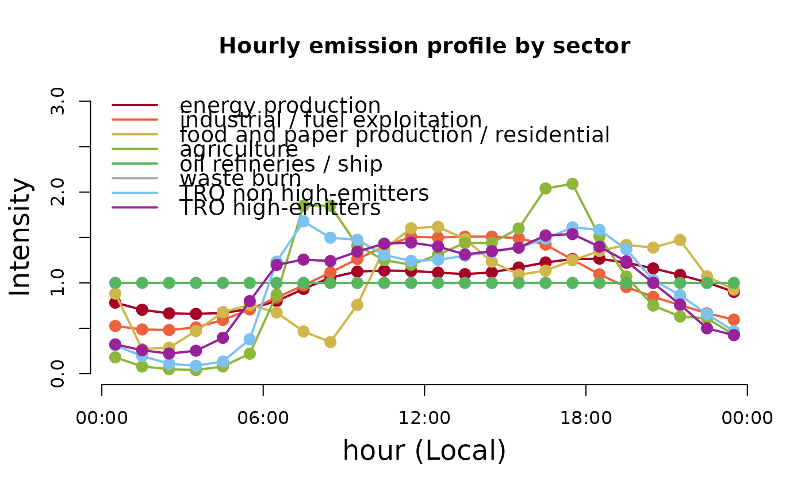

Set of hourly profiles that represents the mean activity for each hour (local time) of the week (currently the profile have the same emissions for different week days).
- ENE
Energy sector
- IND_FUEL
Industry and Fuel production sectors
- RES_COM
Residential and Comercial sectors
- AGR
Agriculture sector
- REF
Oil refineryes and ships (constant)
- AW
Waste Burn
- TRO_PC
Passanger cars
- TRO_HGV
Heavy Duty vehicles
Usage
data(hourly)Details
profiles from Schuch et al. (2026A) based on profiles from Europe and modifications considering local data from Brazil.
Note
The profile is normalized by days (but is balanced for a complete week) it means diary_emission x profile = hourly_emission.
References
Daniel Schuch, Y. Zhang, S. Ibarra-Espinosa, M. F. Andradede, M. Gavidia-Calderónd, and M. L. Belle. Multi-Year Evaluation and Application of the WRF-Chem Model for Two Major Urban Areas in Brazil - Part I: Initial Application and Model Improvement. Atmospheric Environment, 2026A. doi:10.1016/j.atmosenv.2025.121577
Examples
# load the data
data(hourly)
# plot the data
colors <- c("#A60026","#EF603D","#d1b64b","#8eb63b",
"#56B65F","#AAAAAA","#7bc2f0","#992299")
plot(hourly$ENE$Sun,ty = "l", ylim = c(0,3),axe = FALSE,xlab='',
ylab='',col = colors[1], lwd = 2,
main = "Hourly emission profile by sector")
points(hourly$ENE$Sun,col = colors[1], pch = 20, cex = 2)
lines(hourly$IND_FUEL$Sun, col = colors[2], lwd = 2)
points(hourly$IND_FUEL$Sun,col = colors[2], pch = 20, cex = 2)
lines(hourly$RES_COM$Sun, col = colors[3], lwd = 2)
points(hourly$RES_COM$Sun,col = colors[3], pch = 20, cex = 2)
lines(hourly$AGR$Sun, col = colors[4], lwd = 2)
points(hourly$AGR$Sun,col = colors[4], pch = 20, cex = 2)
lines(hourly$REF$Sun, col = colors[5], lwd = 2)
points(hourly$REF$Sun,col = colors[5], pch = 20, cex = 2)
lines(hourly$WB$Sun, col = colors[6], lty = 1, lwd = 2)
lines(hourly$TRO_PC$Sun, col = colors[7], lwd = 2)
points(hourly$TRO_PC$Sun,col = colors[7], pch = 20, cex = 2)
lines(hourly$TRO_HGV$Sun, col = colors[8], lty = 1, lwd = 2)
points(hourly$TRO_HGV$Sun,col = colors[8], pch = 20, cex = 2)
axis(1,at=0.5+c(0,6,12,18,24),
labels = c("00:00","06:00","12:00","18:00","00:00"))
axis(2,at=c(0,0.5,1.0,1.5,2.0, 2.5, 3.0))
legend('topleft',legend = c('energy production',
'industrial / fuel exploitation',
'food and paper production / residential',
'agriculture',
'oil refineries / ship',
'waste burn',
'TRO non high-emitters',
'TRO high-emitters'),
bty = 'n', lty = c(1,1,1,1,1,1,1,1),
col = colors, lwd = 2, cex = 1.2)
mtext('Intensity',2,cex = 1.5, line = 2.6)
mtext('hour (Local)',1,cex = 1.5, line = 2.6)
